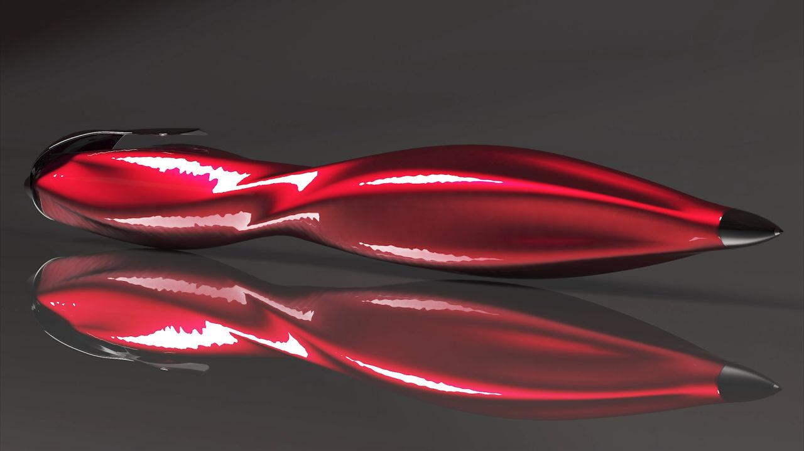
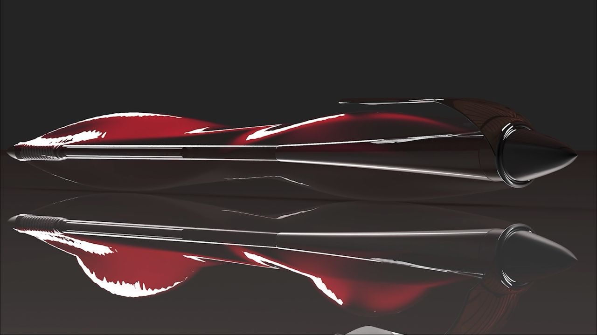

02 — 2025
Most ballpoint pens are designed to disappear.
This one is made to be experienced.
Sabretta reframes a common object as something sculptural and desirable rather than purely functional.
The film explores how presentation changes perception.
Inspired by fragrance advertising, it emphasizes material, movement, and lighting to position the pen as an object of desire, transcending the value of a purely utilitarian object.

The form of this pen was inspired by the pointed, flowing fenders of 1930s roadsters, in particular the Delahaye 165.
The pen was developed in Rhino 3D, progressing from surface exploration to a fully resolved model with internal components considered.
Designing with internal structure in mind ensures the form can translate into a functional, manufacturable object rather than remaining purely conceptual.

Sabretta demonstrates how even the most common objects can be rethought through form and interaction.
This approach can be applied to everyday products to create stronger differentiation and a more intentional user experience without increasing complexity.
A functional prototype with matching pen stand is currently in development.
What if a ballpoint pen could be
sexy?